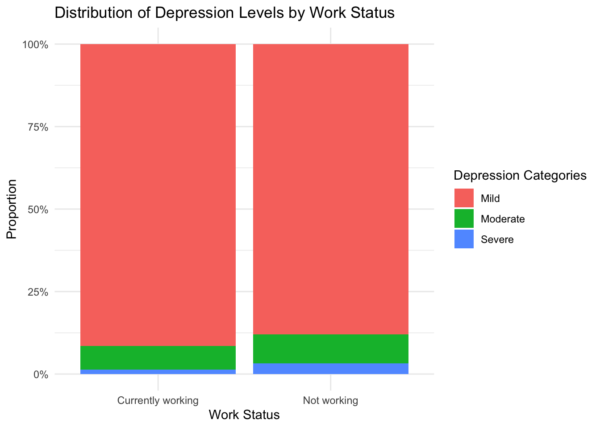
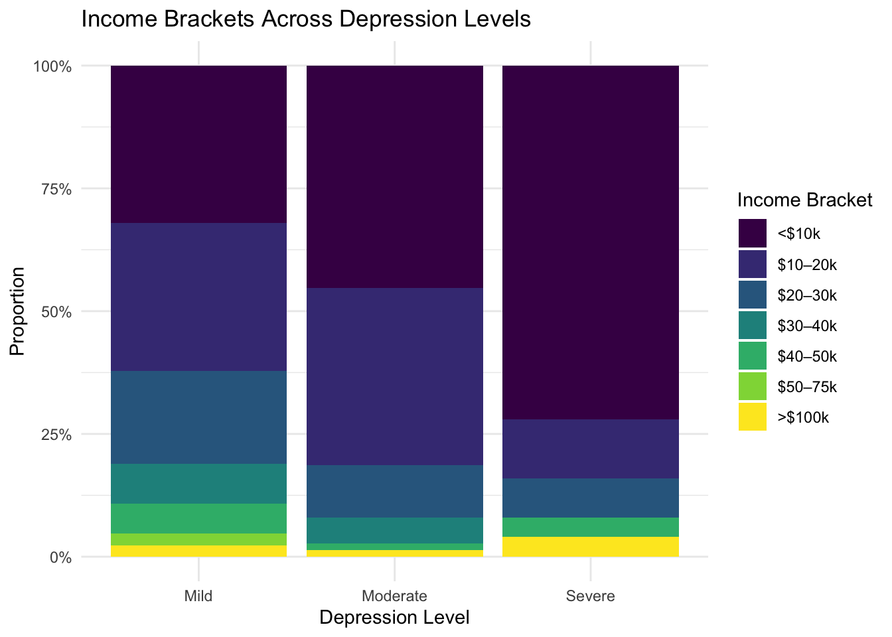
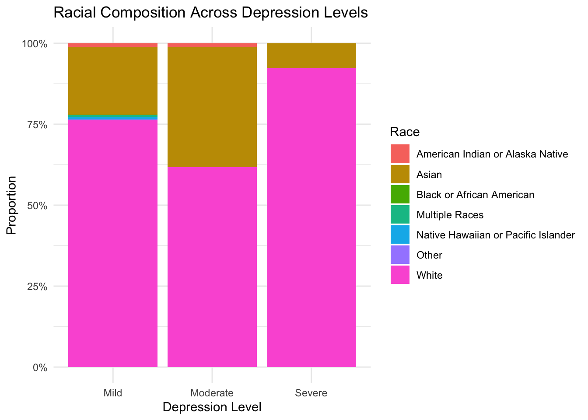

| Characteristic | N | Currently working N = 3011 |
Not working N = 7001 |
|---|---|---|---|
| happy_score | 1,001 | 16.3 (3.0) | 15.8 (3.7) |
| age | 1,001 | 79 (120) | 81 (91) |
| educ | 1,001 | 6.18 (7.45) | 5.00 (5.18) |
| income | 904 | ||
| <$10k | 41 (15%) | 271 (43%) | |
| $10–20k | 87 (32%) | 185 (29%) | |
| $20–30k | 77 (28%) | 82 (13%) | |
| $30–40k | 27 (9.9%) | 42 (6.7%) | |
| $40–50k | 30 (11%) | 21 (3.3%) | |
| $50–75k | 12 (4.4%) | 7 (1.1%) | |
| $75–100k | 0 (0%) | 0 (0%) | |
| >$100k | 0 (0%) | 22 (3.5%) | |
| Unknown | 27 | 70 | |
| depression | 976 | ||
| Mild | 270 (92%) | 599 (88%) | |
| Moderate | 21 (7.1%) | 60 (8.8%) | |
| Severe | 4 (1.4%) | 22 (3.2%) | |
| Unknown | 6 | 19 | |
| race | 1,001 | ||
| American Indian or Alaska Native | 1 (0.3%) | 11 (1.6%) | |
| Asian | 53 (18%) | 169 (24%) | |
| Black or African American | 0 (0%) | 1 (0.1%) | |
| Multiple Races | 2 (0.7%) | 5 (0.7%) | |
| Native Hawaiian or Pacific Islander | 1 (0.3%) | 5 (0.7%) | |
| Other | 0 (0%) | 2 (0.3%) | |
| White | 244 (81%) | 507 (72%) | |
| sex | 1,001 | ||
| Male | 95 (32%) | 191 (27%) | |
| Female | 206 (68%) | 509 (73%) | |
| 1 Mean (SD); n (%) | |||
EDRM 718 Halle Prine Project G
Who’s the Happiest of Them All? A Data Dive into Work, Income, and Mental Health
Research Question: What are the strongest predictors of self-reported happiness among U.S. Allegheny County? Specifically, we examine whether depression levels (PHQ-2), income brackets, and work status are associated with composite happiness scores. We hypothesis that work status may be a primary predictor followed by income and mental health for general perceived happiness.
Data Source: University of Pittsburgh Center for Social and Urban Research (WPRDC, 2015)
Variables Used:
Happiness score (happy1 + happy2; scale: 1-20)
Work status (Currently working, Not working)
Income bracket (<$10k to >$100k)
PHQ-2 Depression score & categories
Age, education, sex, marital status
Race (derived from dummy variables)
The sample consisted of 1,001 older adults (mean age: 79), predominantly White females. Among them, 702 individuals reported that they are currently not working. Of those who are working, the majority reported an annual income in the $10–20K range, while most non-working individuals indicated an income below $10K (Table 1)
Table 1. Sample Demographics
Stacked Bar graphs
The first stacked bar chart shows the proportion of individuals in each depression category (Mild, Moderate, Severe), split by work status (Currently working vs Not working) (Figure 1 and Table 2). We see that majority of both groups fall under the “mild” depression category (light red). Those who are not working shows slightly higher proportions of “moderate” and “severe” depression (green and blue). This any suggest an association between employment and lower depression severity.
Figure 2. Stacked Bar Plot of Depression Levels and Work Status

Table 2. Frequency Table of Depression Scales
Mild Moderate Severe
869 81 26 The next stacked bar graph examined income bracket proportions within each depression level category (Figure 3 and Table 3). We see that individuals with mild depression are more represented in higher income brackets (i.e., $50-75K, >$100K). Those with moderate and severe depression appear more concentrated in the lower income brackets (especially <$10K and $10-20K). The gradient implies a potential inverse relationship between income level and depression severity.
Figure 3. Stacked Bar Plot of Depression Levels and Income

Table 3. Frequency Table of Income
<$10k $10–20k $20–30k $30–40k $40–50k $50–75k $75–100k >$100k
312 272 159 69 51 19 0 22 Finally, we have the stacked bar plot examining the racial breakdown (as a proportion) within each depression level (Figure 4 and Table 4). Examining these plots we see that white individuals (pink) make up the largest racial groups across all levels of depression. There is a greater racial diversity (i.e., higher proportion of Black, Asian, and other races) observed in the “severe” depression category than in “mild”. This suggests that while the sample is predominantly white, race may intersect with mental health disparities in nuanced ways.
Figure 4. Stacked Bar Plot of Depression Levels and Race

Table 4. Frequency Table of Race
American Indian or Alaska Native Asian
12 222
Black or African American Multiple Races
1 7
Native Hawaiian or Pacific Islander Other
6 2
White
751 Correlations
The correlation analysis revealed several notable relationships among the study variables (Table 5). Happiness was negatively correlated with depression scores (r = -0.16, p < .001), indicating that higher levels of depressive symptoms were associated with lower happiness scores. Income was positively correlated with happiness (r = 0.18, p < .001), suggesting that individuals with higher income levels reported greater happiness. Age showed a small but significant positive correlation with education (r = 0.12, p < .001), and income was also positively associated with education (r = 0.08, p = .013). Interestingly, depression scores were negatively correlated with income (r = -0.16, p < .001), further supporting the link between financial stability and mental well-being. Race and happiness were not significantly correlated, and race showed only weak associations with other variables. These findings reinforce the importance of both mental health and socioeconomic factors in shaping perceived happiness.
Table 5. Correlation Matrix
Linear regression
The multiple regression analysis revealed that depression level was the most robust predictor of self-reported happiness (Table 6). Compared to those with mild symptoms, individuals with moderate depression reported happiness scores nearly 2.3 points lower, while those with severe depression were over 6.5 points lower, both statistically significant at p < .001. Income showed a weak linear trend, with higher brackets modestly associated with greater happiness (p = .075), though other non-linear income effects were not significant. Being female was also associated with slightly higher happiness (β = 0.54, p = .03). In contrast, work status, age, education, marital status, and race were not significant predictors after controlling for other variables. Overall, the model explained approximately 16% of the variance in happiness scores (R² = 0.158), underscoring the strong role of mental health—particularly depressive symptoms—as a key factor in subjective well-being.
Table 6. Linear Regression Model Predicting Self-reported Happiness
Conclusions
This analysis highlights depression as the strongest predictor of self-reported happiness among older adults. Even after controlling for socioeconomic variables such as income and work status, individuals with moderate and severe depressive symptoms reported significantly lower happiness scores. While income showed a modest positive association with happiness, its effects were relatively small in comparison. Interestingly, work status and education did not significantly predict happiness once mental health and other factors were accounted for. These findings suggest that interventions targeting mental health—particularly depression—may be more impactful for improving subjective well-being than employment or income-focused efforts alone. Investing in accessible, community-based mental health resources could play a critical role in enhancing overall life satisfaction for aging populations.